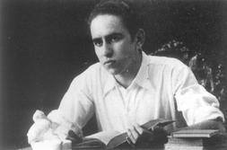

"Pero voy en tu busca, te arranco, te descuajo
de la sombra, del sueño, te clavo en mi recuerdo.
El silencio edifica tu verdad inexpresable.
El mundo se ha cerrado. Conmigo permaneces".
JOSÉ LUIS HIDALGO, "Raíz";
1944.
JOSÉ LUIS HIDALGO
Introducción
Biografía
José Luis Hidalgo fue un poeta y pintor español, en el grupo de la poesía existencial española de posguerra y la denominada "Quinta del 42".
Poemas
TRISTEZA
Todas las cosas son las mismas
que ayer estaban en mi orilla:
tierra inmutable y poderosa,
cielo sereno y hondo arriba,
piedras heladas donde el tiempo
pasa lejano y nunca mira...
Solo las nubes y las rosas
cada mañana son distintas,
como el misterio de mi carne,
por una sangre enrojecida,
donde las luces de la aurora
rompen sus ondas cada día
y en sus espumas me arrebatan
flores ocultas de ceniza...
Pido las cosas que no tengo,
algo que quise y no quería,
un amor vago... Pero pasan
todas las cosas, alma mía,
como las nubes y las rosas
pasan, pasan... Yo no sabía
que allá en tu fondo me brotaba
una tristeza sin medida,
porque las cosas que yo quise
cada mañana son distintas:
nubes y rosas, amor vago,
y esta tristeza que no es mía...
José Luis HidalgoLos Muertos, 1947.